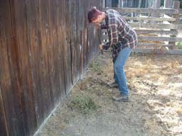
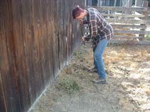

DC Installation
The DC installation consisted of the battery bank, the DC disconnect, and a TriMetric meter for the batteries. I felt it safest to ground the system as early as possible so I installed the ground rod before anything else.
 

Ground Rod
Pounding an 8' long steel rod into the ground was quite exhausting. Since the rod is actually in a side section of the horse pasture, I made sure that the top of it was below ground level so the horses would not hurt it or themselves. It took me about an hour total to drive the rod all the way down and I broke one handle and threw the head off another of the sledge hammers. I used 8-gauge unshielded wire for the ground.
Batteries
The batteries had no information on their surfaces at all and I did not own a multimeter so I had to purchase one on one of my numerous trips to the store. Using the multimeter, I learned that the batteries were 6V each and wired them all in series giving me 24V.
DC Disconnect
Before mounting the DC disconnect, I opened it up and attached the DC Breaker (bottom), the Bonding Block (right photo middle part), and the Shunt (left).
DC Breaker
The DC Breaker was leftover from the original design where we would have used a DC powered motion sensor to sense when to turn on the inverter. We later decided against the idea and do not in fact have any DC loads but it's still there just in case.
Bonding Block
The Bonding Block is simply a convenient place to run all ground cables. It has several different sized holes for the various gauges of wires plugged into it. Per the advice of friends, I purchased some GB Oxgard which I applied to each steel screw. The Oxgard keeps the metal from seizing up. Unwired DC Disconnect (left), wired DC Disconnect (middle), GB Oxgard in action (right).
TriMetric Meter and the Shunt
The Shunt came with the TriMetric meter. The wiring for the TriMetric meter was more complex than anything else. Although not required, the instructions recommended twisting the wires in pairs, which I did. The back of the TriMetric is wired in the image below using the only screw driver I could find that would fit the screws.
In the photo below, you can see the large 2/0 wires (bottom red & black) coming from the batteries; the negative lead to the bonding block and the positive lead to the DC Disconnect breaker. You can also see the twisted pairs of wires entering the box to be wired to the shunt from the TriMetric meter. At the top, you can see the DC breaker with two wires tied in a knot sticking out of the DC Disconnect box. Since we still have no DC load, they are still hanging there. You can also see the lone red wire from the TriMetric running into the DC Disconnect and then out again to a 2-amp fast blowing bus fuse which was attached as close as possible to the positive lead of the battery bank.
CAUTION!
This is a photo of what happens when you use a long metal allen wrench to tighten hot wires! If you look closely at the DC Disconnect photo above, you may be able to see the blackened bolt on the Bonding Block which is where the allen wrench was when I accidentally completed the 24V 225Amp circuit! I got to see a great big white spark and a big gash in my finger. Oddly, the gash never hurt. I didn't notice it was there until I saw the blood on the socket wrench a few minutes later. Doh!
Lesson learned: attach the power source last!
| 
{kind=link}
{kind=link}
{kind=link}
{kind=link}
{kind=link}
{kind=link}
{kind=link}
{kind=link}
{kind=link}
{kind=link}
{kind=link}
{kind=link}